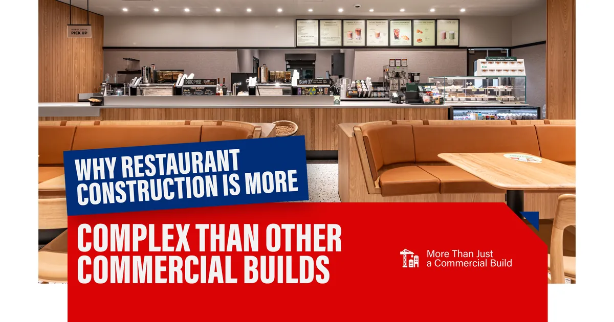
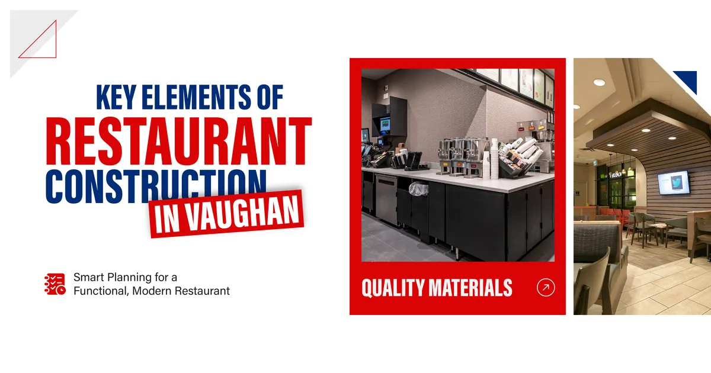
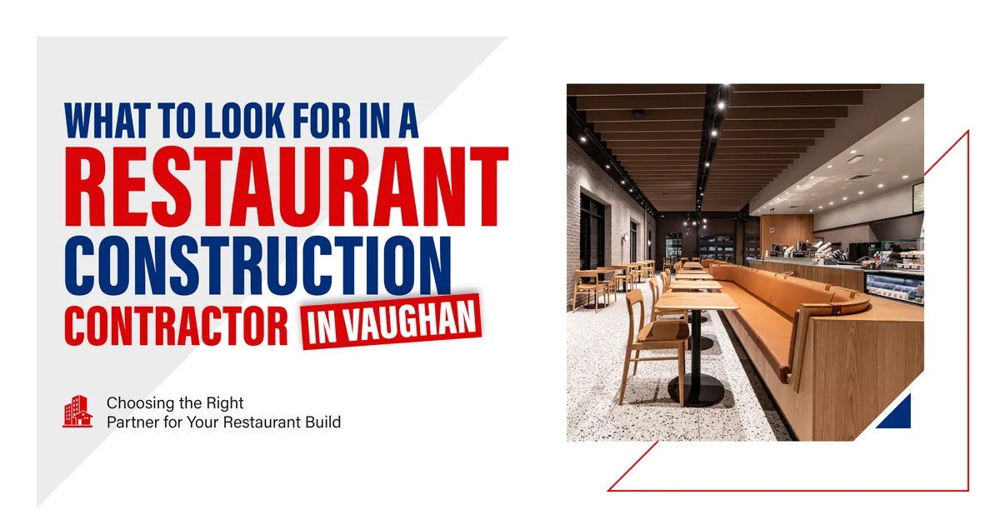
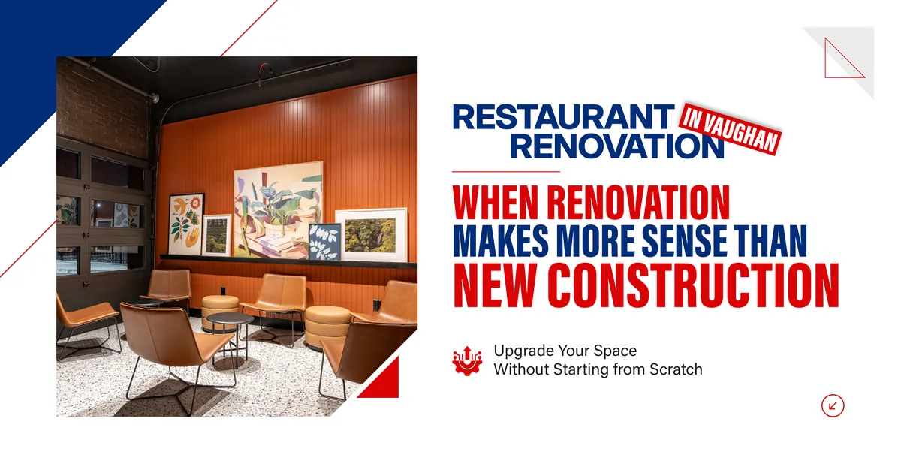
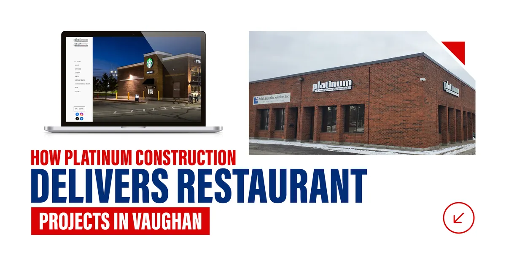
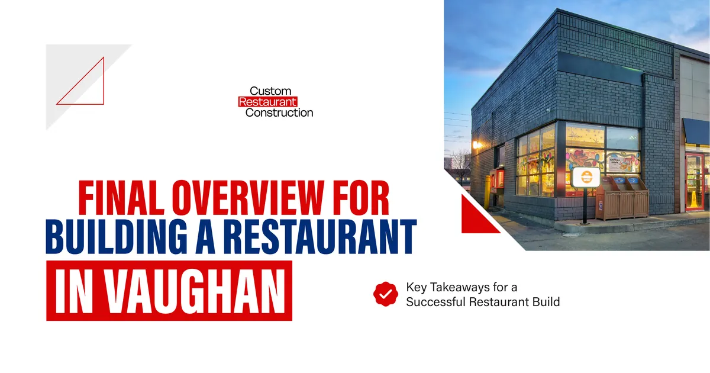

But between the concept you have in your head and the restaurant that opens its doors to customers, there is a construction project that needs to go right. And restaurant construction is one of the most technically demanding types of commercial building work there is.
The wrong contractor can leave you with a kitchen that does not pass health inspection, a ventilation system that cannot handle your cooking equipment, or a dining room that looks nothing like what you planned. The right restaurant construction contractor in Vaughan gets all of that right from the start and delivers a space that works as well as it looks.
Platinum Construction has built restaurants, food court locations, and commercial kitchen spaces across Ontario for some of the most recognized brands in the country. This guide walks through what restaurant construction in Vaughan actually involves and why choosing the right construction partner matters more than almost any other decision you will make before opening day.

Why Restaurant Construction Is More Complex Than Other Commercial Builds
A restaurant is not just a room where people eat. It is a food production facility, a customer experience environment, and a regulated commercial space all operating under one roof simultaneously.
Every element of the build has functional demands that go well beyond what a standard office or retail renovation involves. The kitchen needs to support continuous food production under commercial health standards. The ventilation system needs to handle grease laden cooking exhaust safely. The plumbing needs to connect to grease interceptors, floor drains, and multiple water supply points simultaneously. The electrical system needs to distribute power across commercial cooking equipment, refrigeration, lighting, and point of sale technology all at once.
A restaurant construction contractor in Vaughan who has built these spaces before understands how all of these systems need to work together. One who has not tends to figure it out during your project, which is an expensive way to learn.
The Kitchen Is Where Most Mistakes Happen
Commercial kitchen construction in Vaughan is the technical core of any restaurant build. Equipment placement drives plumbing rough in location. Cooking equipment selection drives hood and exhaust sizing. The sequence of decisions in the kitchen is tightly connected, and getting one wrong tends to create problems downstream.
A commercial kitchen renovation or new kitchen build needs to be planned with the final equipment list in hand before rough in work begins. Changes after rough in are costly. Changes after walls are closed are very costly. An experienced restaurant construction contractor will push for these decisions to be finalized early and will flag the downstream implications before they become problems.

Key Elements of Restaurant Construction in Vaughan
Whether you are building a full service restaurant from scratch, completing a restaurant fit out in an existing commercial space, or renovating a kitchen in an established location, certain construction elements come up in virtually every restaurant project.
| Build Element | What It Involves |
|---|---|
| Commercial kitchen construction | Equipment layout, plumbing rough in, electrical circuits, ventilation hood and exhaust |
| Grease management | Grease interceptor connection, floor drain placement, waterproofed wet areas |
| HVAC and ventilation | Kitchen exhaust, makeup air, dining room comfort cooling and heating |
| Dining room build out | Partition walls, flooring, ceiling, lighting zones, acoustic considerations |
| Bar construction | Counter millwork, equipment connections, plumbing and electrical for bar equipment |
| Electrical distribution | Panel sizing for total restaurant load, circuit planning for kitchen and front of house |
| Health authority compliance | Meeting York Region or local public health requirements for food service |
| Permit management | Building, plumbing, electrical, and mechanical permits through the City of Vaughan |
Every one of these elements needs to come together in the right sequence within a construction timeline that is often tied to a lease commencement date or a brand opening target. Managing that coordination is exactly what separates a capable restaurant construction company in Vaughan from a general contractor who has never built a food service space before.

What to Look for in a Restaurant Construction Contractor in Vaughan
Not every commercial builder has the experience or the technical depth that restaurant construction demands. Here is what actually matters when you are evaluating contractors for a restaurant project in Vaughan.
Verified Restaurant or Food Service Build Experience
Ask directly whether the contractor has completed restaurant builds, commercial kitchen renovations, or food court fit outs before. Ask to see them. A restaurant construction contractor in Vaughan worth working with will have a documented portfolio of completed food service projects that you can review and reference.
Platinum Construction's portfolio includes completed builds for Chipotle Mexican Grill, Starbucks, Edo Japan, and Tim Hortons across Ontario, including locations in Vaughan, Markham, Mississauga, Whitby, Oshawa, Kitchener, and beyond. That is the kind of verified food service construction experience that matters when your project needs to meet brand standards and health authority requirements simultaneously.
Detailed and Itemized Estimating
A restaurant build involves enough moving parts that a vague estimate is genuinely dangerous to plan around. A reliable commercial restaurant renovation contractor in Vaughan provides a written, itemized estimate that breaks down kitchen construction, dining room work, mechanical systems, permits, and contingency as separate line items. If an estimate feels more like a guess than a breakdown, that is a signal worth taking seriously.
Permit and Health Authority Management
Restaurant projects in Vaughan require building permits through the City of Vaughan and approval from York Region Public Health for commercial food service operations. A restaurant fit out contractor in Vaughan who manages both of these processes as part of their service saves significant time and prevents the confusion of navigating two separate regulatory frameworks independently.
A Dedicated Project Manager for Your Build
Restaurant construction involves many trades working in close coordination. Plumbers, electricians, mechanical contractors, millwork fabricators, drywall crews, and flooring installers all need to be sequenced carefully. A dedicated project manager who owns that coordination and communicates with you consistently throughout the project is not a luxury in a restaurant build. It is a necessity.

Restaurant Renovation in Vaughan: When Renovation Makes More Sense Than New Construction
Not every restaurant project starts with an empty shell. Many Vaughan restaurant owners are working with an existing space that needs to be updated, expanded, or reconfigured to support a new concept or growing demand.
Commercial restaurant renovation in Vaughan carries its own set of considerations. Existing kitchen infrastructure may need to be assessed before any renovation pricing is finalized. Older commercial spaces in Vaughan and across York Region sometimes carry electrical panels that cannot support modern commercial kitchen loads, ventilation systems that do not meet current code, or plumbing configurations that do not match the needs of the new concept.
A thorough site assessment before renovation pricing is finalized is the single most effective way to prevent the budget surprises that come from discovering these conditions after work has begun. Platinum Construction conducts detailed site assessments on every renovation project we take on, which is why our estimates hold through to completion rather than growing unexpectedly once construction starts.
Here is a simple comparison of what to consider when deciding between a renovation and a new build out.
| Factor | Renovation | New Build Out |
|---|---|---|
| Upfront cost | Generally lower if existing infrastructure is usable | Higher initial investment |
| Timeline | Faster when existing systems are in good condition | Full build cycle required |
| Design flexibility | Limited by existing layout and infrastructure | Complete control from the start |
| Infrastructure risk | Hidden conditions can add cost once walls open | All systems built to specification |
| Permit complexity | Depends on scope of changes | Full permitting required |
| Best suited for | Refreshing a functioning space or adapting an existing layout | New concepts or spaces not previously used for food service |

How Platinum Construction Delivers Restaurant Projects in Vaughan
At Platinum Construction, restaurant construction in Vaughan is not a new category for us. We have built for some of the most demanding food brands in the country and we bring that same level of technical discipline and project management to every restaurant project we take on regardless of scale.
We start every restaurant project with a detailed planning conversation. We want to understand your concept, your menu, your equipment list, and your target opening date before we finalize any construction plan. That upfront conversation shapes the kitchen layout, the ventilation design, the electrical distribution, and the overall project schedule in ways that prevent the costly changes that happen when construction starts before planning is complete.
Our teams manage the full permit process through the City of Vaughan, coordinate with York Region Public Health on food service requirements, and assign a dedicated project manager to every project who stays in regular contact with you throughout the build.
We serve clients across Vaughan, Woodbridge, Maple, Concord, Kleinburg, Vellore Village, Thornhill, and the broader Greater Toronto Area. Whether your restaurant is going into a new commercial development, an existing plaza space, or a standalone building in Vaughan, we bring the same standard of planning, execution, and accountability to every project.
Frequently Asked Questions
What makes restaurant construction different from other commercial builds?
Restaurants combine food production, customer experience, and regulated commercial operation under one roof, creating technical demands around kitchen ventilation, grease management, health compliance, and electrical load that most commercial spaces do not have.
How long does a restaurant build out take in Vaughan?
Most restaurant build outs in Vaughan run between three and six months from permit approval to opening day depending on size, scope, and the complexity of kitchen and mechanical systems.
Do I need a separate health authority approval for a restaurant in Vaughan?
Yes. In addition to building permits through the City of Vaughan, commercial food service operations require approval from York Region Public Health before opening.
What is the most important decision to make before restaurant construction begins?
Finalizing your kitchen equipment list and layout before rough in work begins is the single most impactful early decision, since equipment choices drive plumbing, electrical, and ventilation planning throughout the build.
Can Platinum Construction handle both restaurant renovation and new build projects?
Yes. We work across both renovation and new build out projects and conduct thorough site assessments on renovation projects to ensure accurate pricing before work begins.
What restaurant brands has Platinum Construction built in Ontario?
Our completed portfolio includes Chipotle Mexican Grill, Starbucks, Edo Japan, and Tim Hortons across multiple Ontario markets including Vaughan, Markham, Mississauga, Whitby, Oshawa, and Kitchener.
How do I get started with Platinum Construction for a restaurant project in Vaughan?
Visit platinumconstruction.com to contact our team directly. We offer a free initial consultation to discuss your concept, scope, location, and timeline.

Final Overview for Building a Restaurant in Vaughan
A well built restaurant in Vaughan starts with the right construction partner. One who understands commercial kitchen construction, manages the regulatory process, coordinates trades with discipline, and delivers a finished space that works from the moment it opens.
Platinum Construction brings verified restaurant construction experience, a proven food brand portfolio, and deep local knowledge of the Vaughan and York Region construction landscape to every project we take on. If you are planning a restaurant build out, a commercial kitchen renovation, or a restaurant fit out in Vaughan or anywhere across Ontario, we are ready to start that conversation with you. Visit platinumconstruction.com to book your free consultation today.